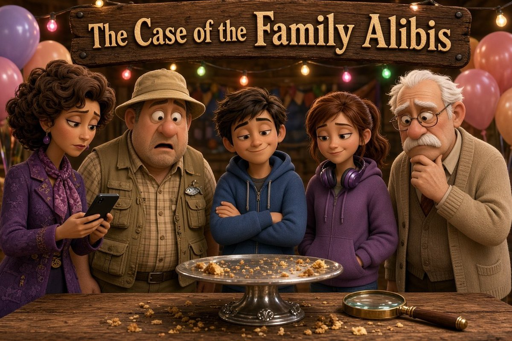
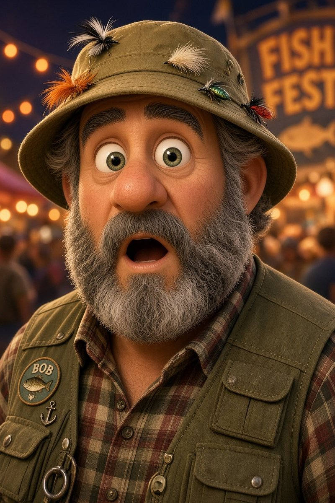
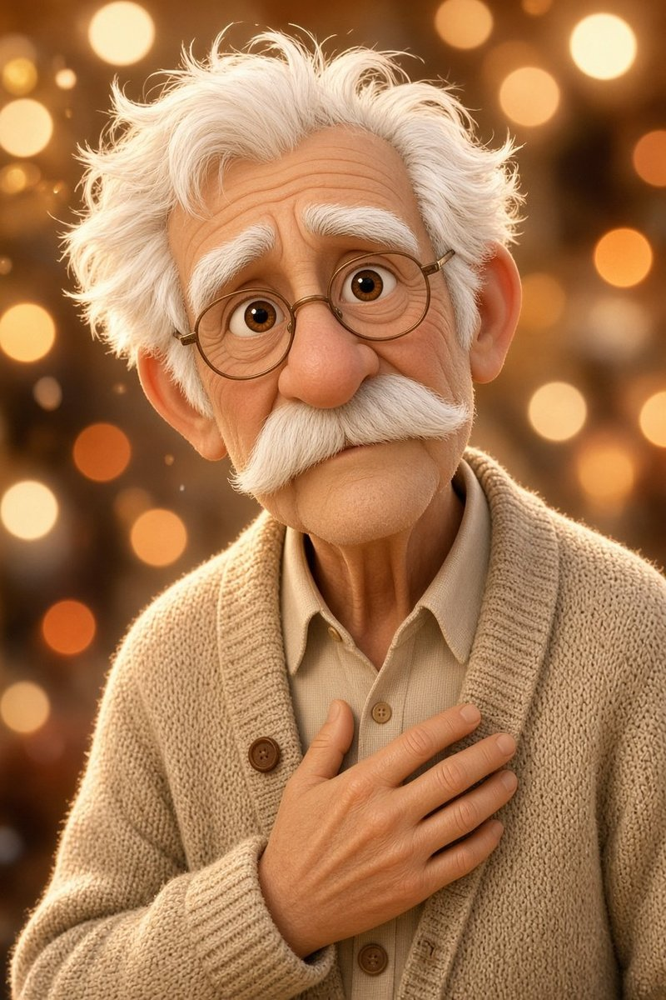
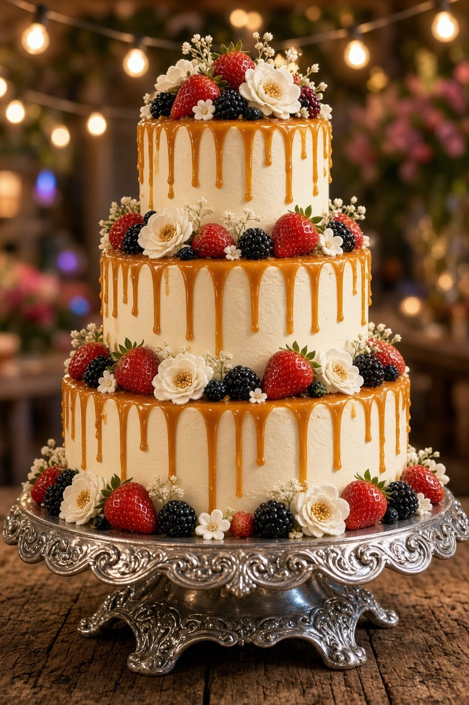

Дело о семейных алиби
Суббота, через два часа большая семейная свадьба. Трёхъярусный торт стоял на серебряном блюде на кухне — и вдруг исчез! Остались только крошки и старинная лупа. Четверо родственников были рядом с домом. Твоя миссия: проверить их алиби.
Цель урока: задавать и понимать вопросы с Where / When / Who / What was the weather like / Why и was / were.

Attention, Junior Investigator!
It is Saturday afternoon, two hours before the big family wedding. The three-tier wedding cake was sitting on the silver platter in the kitchen. But now, it has completely vanished! Only crumbs and an antique magnifying glass remain. Four suspicious relatives were near the house. Interrogate Aunt Sally, Uncle Bob, the twin cousins Jake and Jess, and Grandpa Joe. Ask the four golden Wh-questions to check their alibis!


Четыре золотых вопроса
Нажми карточку, чтобы перевернуть. На обороте — перевод и формула. Нужно открыть хотя бы три, чтобы засчитать ключ брифинга.
was
I / he / she / it was at the shop.
were
you / we / they were in the garden.
Who … with?
Who were you with? — предлог with в конце.
Weather
What was the weather like? It was sunny.
Собери вопросы из слов
Слова уже перемешаны. Нажимай их по порядку и собери правильный Wh-вопрос. Порядок сохраняется, даже если ты уйдёшь на другую часть урока.
0 / 7
Какое вопросное слово подходит?
Прочитай ответ свидетеля и выбери Where, When, Who, What или Why. Варианты перемешаны.
0 / 7
Допрос: напиши свои вопросы
Опроси всех четверых родственников. Для каждого сам составь четыре вопроса: Where, When, Who … with и What was the weather like. Если вопрос собран верно, откроется официальный ответ и можно послушать голос (en-GB).
Печати алиби: 0 / 4
Найди противоречия

Сравни показание и улику. Торт на фото — тот самый, который пропал с блюда. Куда он мог деться?
0 / 6
Что случилось с тортом?
Перечитай улики миссии 4 и выбери, что произошло на самом деле. Если вердикт верный, откроются объяснения всех четверых родственников.
Рапорт детектива
Academy Stars Detective Bureau
Junior Investigator Junior Investigator
Ключи по делу: 0 / 8
The wedding cake is safe. Nobody stole it — the family moved it to a cold place so the cream would not melt.
Код:
Home Mission
Do this at home. Write the questions yourself. Use was or were and a Wh-word: Where, When, Who, What or Why.
1. Turn the sentence into a Wh-question
Look at the highlighted idea and start with the right Wh-word. Check each question when you finish it.
0 / 7
2. Find the correct sentence
One sentence is wrong. Choose the correct question. The options are in a new order each time.
0 / 7
3. Ask your family
Write your own question and the person’s answer. Use was / were. Do not copy the example word for word — invent a real question.
0 / 6
4. Read and choose
The Mystery of the Lemon Pie at Aunt Clara’s Picnic
Last Sunday was warm and breezy. Uncle David and Aunt Clara were in Green Park with their twins, Max and Mia. At twelve o'clock, they were all by the big oak tree. Aunt Clara was with Mum, unpacking sandwiches. Uncle David was by the pond with the dog. Max and Mia were on the swings. At one o'clock, the lemon pie was gone from the picnic basket! Uncle David said he was still by the pond. Max and Mia said they were hungry, but they were near the playground. Suddenly, Mia laughed. “Look under the picnic blanket!” The playful puppy Barnaby was asleep with yellow crumbs on his paws!
0 / 6